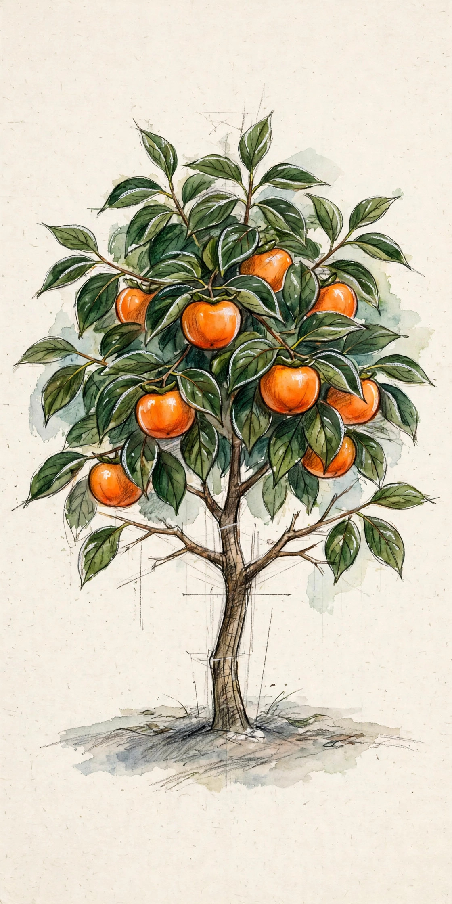
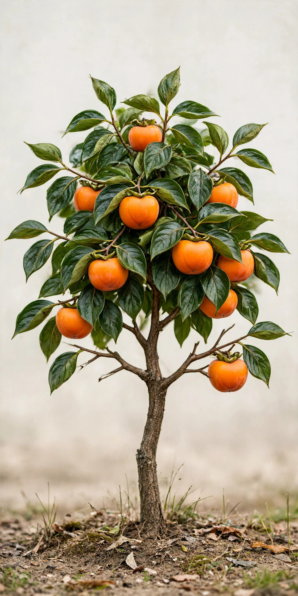
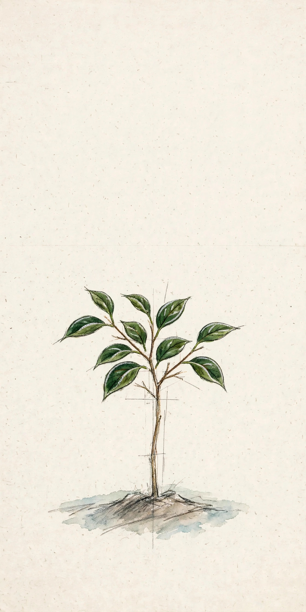
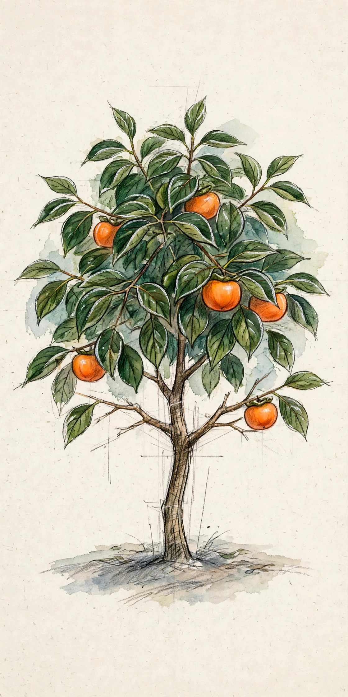
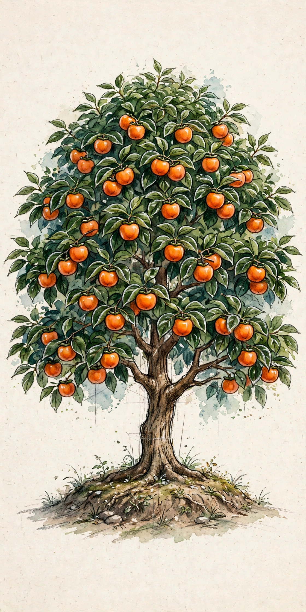

In Library


№012
Fuyu Persimmon
Diospyros kaki ‘Fuyu’



Fuyu Persimmon
Diospyros kaki ‘Fuyu’
SOIL
Loamy, drained
— pH 6.0–7.5
Dex Entry
Plant it in full sun with room to spread, in loamy, well-drained soil. Water deeply once a week while it establishes; after that, rainfall mostly covers it.
Prune in late winter to an open framework, and thin the fruit in June so what remains ripens large. Pick at deep orange — a Fuyu is eaten crisp, straight off the branch.